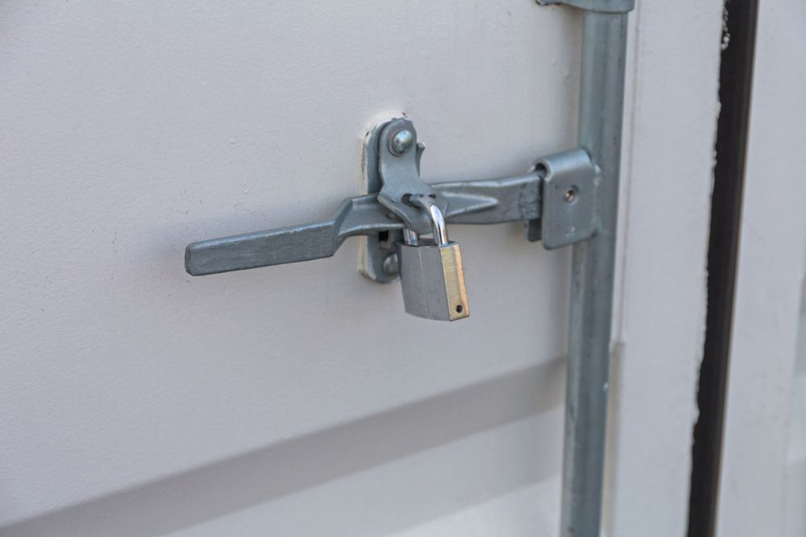

On this page
AT A GLANCE
At SPL Security Solutions in Elanora, we understand that security is a top priority for homeowners and businesses alike.
Get A Free Quote Now!
Thank you for contacting SPL Security Solutions.
We will be in touch soon.

Protection for Your Home, Vehicle & Commercial Assets
At SPL Security Solutions in Elanora, we understand that security is a top priority for homeowners and businesses alike. Our range of locksmith services includes key cutting, master key systems, restricted key systems and high-security locks to protect against potential threats. Whether you require a simple lock change or a more complex security solution, our team has the expertise and technology to provide tailored services that meet your specific needs.
Our professionals have years of experience in the industry and we are committed to providing reliable and professional services to our clients around Northern NSW, including Gold Coast and Brisbane. We work closely with you from consultation through to installation and maintenance, ensuring your property remains safe and secure at all times. With our locksmith services, we aim to provide peace of mind to our Elanora community.
For more information on our comprehensive range of locksmith services, call (07) 5588 8111.
Our Locksmiths services
Elanora is covered by our comprehensive residential locksmith services, designed to enhance security in the home and provide added peace of mind. Whether you need new locks installed, existing ones repaired or rekeying, we're here for you. Plus, our key duplication and emergency lockout services ensure help is always at hand when the unexpected happens.
We offer professional commercial locksmith services to safeguard Elanora businesses. Our team installs high-quality locks, master key systems and access control solutions to manage who can enter different parts of your property. We also provide emergency assistance after a lockout or break-in, as well as security assessments to identify potential vulnerabilities throughout your premises.
Our automotive locksmith services in Elanora offer comprehensive solutions to all your key-related issues. Whether you need a new key, a duplicate or an ignition repair or replacement, our expert team can help. We also provide transponder key programming and 24/7 emergency assistance to ensure you're never stranded without help.
In Elanora, our restricted key systems utilise proprietary technology to ensure keys are unduplicable without the explicit authorisation of the system owner. This advanced security feature guarantees only authorised personnel can access designated areas, greatly reducing the risk of breaches. Our team works closely with Elanora clients to customise these systems, ensuring they align with specific security requirements.
Our Elanora clients can choose from our range of safes, carefully selected to meet various security needs. Whether you need a safe for your personal valuables or business takings and documents, we offer different types and sizes to suit each requirement. Our services also include installation, maintenance and emergency unlocking, ensuring your belongings are always protected against theft and environmental threats.
Whether you're looking for security systems for your home or business in Elanora, we've got you covered. Our solutions include CCTV cameras, alarm systems, access control and intercoms to provide comprehensive surveillance and monitoring capabilities. We can design a customised system that meets your specific security requirements and budget.
Our lock hardware in Elanora features reinforced deadbolts, multi-point locking systems and versatile digital locks. These options ensure comprehensive protection and seamless integration with modern security systems.
Enhance your doors in Elanora with precision-engineered hinges, stylish door levers and hydraulic closers for effortless operation. These products are created to provide both security and aesthetic appeal.
Our range of door hardware combines functionality with style, featuring fire-rated components, smooth-operating closers, and sophisticated handles for various architectural styles in Elanora.
24/7 Emergency Locksmith Services
At SPL Security Solutions, we offer 24/7 emergency locksmith services to Elanora residents for all their urgent lock-related needs. Our team has the expertise and technology to assist with any lockout situation, providing re-entry services, key cutting and more.
In case of an attempted or actual intrusion, our team can assess your property and provide necessary repairs or replacements to re-secure your entry points. Our mobile vans come equipped with the latest tools and technology to provide on the spot lock replacements, rekeying and much more.

Contact Details
24/7 Emergency Locksmiths or Security Tech


Trading Hours
Retail Shop

Frequently Asked Questions
-
How often should locks be replaced?
Locks don't have a set expiry date, but should be replaced if they show signs of wear, fail to function properly or after a security breach. Upgrading your locks every few years can also ensure you benefit from advances in security technology.
-
What are security pins and how do they make locks more secure?
Security pins are modified pins used within a lock's cylinder to make it more resistant to picking and bumping. These pins come in various shapes (e.g., spool, mushroom, serrated) and create a more complex and challenging lock for potential intruders to manipulate.
Locksmith & Security Solutions Gold Coast, Brisbane & Northern NSW